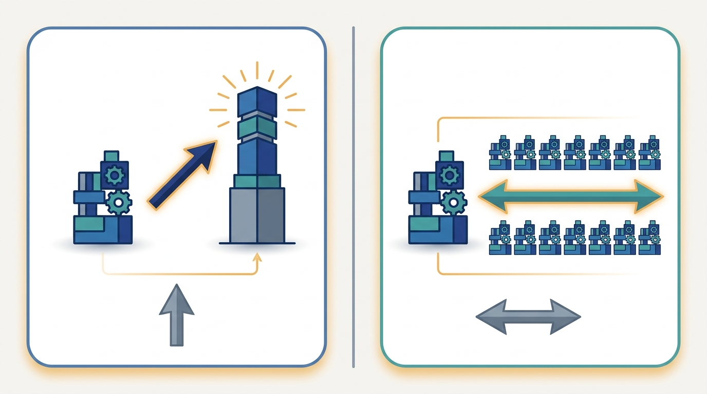

"They offered me a bigger box. I asked how big the next box would be, and the silence told me everything I needed to know about buying my way out of this."
A Worker That Outgrew Its Chassis

There are exactly two ways to give a workload more resources: make one machine more capable (scale up) or add more machines and divide the work among them (scale out). Scaling up is the simpler move, a single bigger accelerator with more memory and a faster interconnect inside the box, and for a while it is also the faster move, because nothing communicates over a network. But the biggest single machine that exists is a hard ceiling, and the price of the largest configurations climbs faster than the capability they deliver. Scaling out has no such ceiling: commodity nodes are cheap per unit and you can keep adding them, but every added node pays a communication and coordination tax that eventually erases the benefit. This section makes that trade-off precise, shows with a worked calculation where scale-out starts to win, and states plainly why this book leads with scale-out and treats single-node efficiency as a labeled prerequisite rather than the main event.
The previous section, Section 1.2, gave us the six axes along which an AI system can be distributed. Each of those axes is a way to scale out, to spread an essential activity across machines. Before we commit to that path for the rest of the book, we owe the reader a fair comparison with the alternative, because the alternative is real, it is often correct, and it is the thing every engineer reaches for first. That alternative is to scale up. This section draws the line between the two precisely, prices both sides, and explains the editorial choice that organizes everything that follows.
1. Two Words for Two Different Moves Beginner
To scale up is to replace one machine with a more capable one: a larger accelerator with more memory, more on-chip compute, and a faster interconnect inside the box. The program does not change; it simply runs on a stronger node. Nothing crosses a network that did not cross it before, so there is no new communication to manage and no new failure mode to design around. This is why scaling up is the default instinct: it asks nothing of your code. You pay the cloud bill for a bigger instance and the same single-process program runs faster.
To scale out is to add more machines and partition the work among them. The program must now split its data or its computation into pieces, hand each piece to a different node, and recombine the partial results into one coherent answer. That recombination crosses a network, and the network is slower and less reliable than the memory bus inside a single box. Scaling out therefore asks a great deal of your code: a way to split the work, a collective operation to combine it (the all-reduce of Chapter 4), and a plan for what happens when one of the many nodes fails. In exchange, it removes the ceiling. There is a biggest single machine; there is no biggest cluster.
The two are not enemies, and a well-built system uses both. You scale each node up to a sensible, cost-effective point, then scale out across many such nodes. The question this section answers is not "which one is right" in the abstract, but "where is the boundary," because the boundary is where the engineering decisions live.
Scaling up makes one machine faster without changing your code or adding a network, so it is the right first move while the workload still fits on a single node. But it terminates at the largest machine money can rent, and the top of that range is priced superlinearly: the last increment of capability costs far more than the first. Scaling out removes the ceiling entirely, at the price of a communication and coordination tax that grows with the number of nodes. The decision is never philosophical; it is the point where the cost of the tax falls below the cost of the next bigger box, and that point is something you compute, not something you assume.
2. Why the Two Curves Have Different Shapes Beginner
The clearest way to see the trade-off is to plot what each move costs as you ask for more. Figure 1.3.1 sketches the two curves that govern every scale decision. The scale-up curve starts low and gentle: a slightly bigger node costs slightly more. Then it bends sharply upward and stops, because the premium configurations at the top of a product line are priced far above their linear share of capability, and beyond the largest one there is simply nothing to buy. That vertical wall is the hard ceiling. The scale-out curve has no wall. It rises gently and continues indefinitely, because each added commodity node costs roughly the same modest amount. Its catch is hidden in the slope: the line is not flat, because every node you add makes the communication step a little more expensive, so throughput per dollar slowly degrades even though total throughput keeps climbing.
Two features of Figure 1.3.1 carry the whole argument. The first is the wall on the scale-up curve: no matter how much you are willing to spend, the curve does not extend past the largest machine that exists, so any workload that needs more than one machine can deliver has no scale-up answer at all. The second is the slope of the scale-out curve: it is gentle but not flat, and that residual slope is the communication tax. A flat scale-out curve would mean perfect efficiency, free combination of partial results; the real curve tilts upward because combining results across more nodes costs more, a cost that Chapter 3 models exactly with its $\alpha\beta$ communication formula and Amdahl's law.
3. Pricing the Trade-Off Intermediate
A picture sets the intuition; numbers settle the decision. Consider a fixed workload of total size $W$, measured in the seconds it would take one commodity node to finish it. We compare two ways to clear that work. The scale-up option is one premium node running at speed $s_\text{up}$ relative to a commodity node, rented at price $p_\text{up}$ per hour. The scale-out option is $K$ commodity nodes, each at speed $1$ and price $p_\text{out}$ per hour, but with a parallel efficiency below one because the nodes must synchronize. A standard way to capture that loss is
$$\text{efficiency}(K) = \frac{1}{1 + c\,(K-1)}, \qquad s_\text{out}(K) = K \cdot \text{efficiency}(K),$$where $c$ is the fraction of an ideal step lost to communication per additional peer. The effective speed $s_\text{out}(K)$ is the number of commodity-node-equivalents of useful throughput you actually get from $K$ nodes. Wall-clock time is $W / s$ and dollar cost is the time multiplied by the per-hour price of whatever you rented. The crucial asymmetry is that scale-up cost is fixed (one machine, one price), while scale-out cost bends upward as $K$ grows: doubling the nodes less than doubles the useful speed once $c(K-1)$ is no longer small, so the bill per unit of work climbs. The code below evaluates both sides on a concrete workload and prints where scale-out wins.
# Crossover model: one big scale-up node vs K commodity scale-out nodes.
# Fixed workload W = total compute (in "node-seconds" of a commodity node).
W = 1_000_000.0 # work units (commodity node-seconds at speed 1.0)
# Scale-up: one premium node is FAST but priced superlinearly in its speed.
up_speed = 6.0 # 6x a commodity node
up_price = 18.0 # $/hour: ~3x the speed costs ~3x the per-x premium
# Scale-out: K commodity nodes, each speed 1.0, $2/hour, but they pay a
# communication tax that grows with K (more peers to synchronize each step).
out_price_each = 2.0 # $/hour per commodity node
comm_frac = 0.04 # fraction of ideal step time lost per extra peer
def hours(seconds): return seconds / 3600.0
# Scale-up time and cost.
up_time_s = W / up_speed
up_cost = hours(up_time_s) * up_price
print(f"{'config':<22}{'time (h)':>10}{'cost ($)':>12}")
print(f"{'scale-up (1 big node)':<22}{hours(up_time_s):>10.2f}{up_cost:>12.2f}")
print("-" * 44)
# Scale-out for a range of K. Effective speed = K, scaled down by the comm tax.
for K in [2, 4, 8, 16, 32, 64]:
efficiency = 1.0 / (1.0 + comm_frac * (K - 1)) # parallel efficiency
eff_speed = K * efficiency
out_time_s = W / eff_speed
out_cost = hours(out_time_s) * (out_price_each * K)
win = " <-- beats scale-up on cost" if out_cost < up_cost else ""
print(f"{'scale-out K=' + str(K):<22}{hours(out_time_s):>10.2f}{out_cost:>12.2f}{win}")
config time (h) cost ($)
scale-up (1 big node) 46.30 833.33
--------------------------------------------
scale-out K=2 144.44 577.78 <-- beats scale-up on cost
scale-out K=4 77.78 622.22 <-- beats scale-up on cost
scale-out K=8 44.44 711.11 <-- beats scale-up on cost
scale-out K=16 27.78 888.89
scale-out K=32 19.44 1244.44
scale-out K=64 15.28 1955.56
Read Output 1.3.1 as two competing stories told by the same table. On cost, the small clusters win outright: $K=2$ clears the work for about $578 against the big node's $833, and $K=4$ and $K=8$ stay under it as well. On time, the big node finishes in $46$ hours while $K=8$ matches it at lower cost and larger clusters beat it outright, $K=64$ finishing in about $15$ hours. The tension is visible in the cost column past the crossover: from $K=16$ onward the bill climbs above the scale-up price, because the communication tax means each doubling of nodes buys less than a doubling of useful speed. This is the quantitative form of the warning in Section 1.1 that more machines can stop helping. The honest answer to "how many nodes" is the smallest $K$ that meets your deadline, not the largest $K$ your budget allows, and finding it is a measurement, the discipline that Chapter 3 formalizes.
Who: A data platform engineer at a retail company building nightly product embeddings for a recommendation system.
Situation: The job encoded a catalog of two hundred million items, and the feature tables plus the model activations needed roughly four hundred gigabytes of accelerator memory to run at full batch.
Problem: The largest single accelerator the company could rent topped out at eighty gigabytes, so the workload did not fit on any one machine at any price.
Dilemma: Keep chasing a bigger box, the scale-up reflex, even though the curve in Figure 1.3.1 had already hit its wall, or rewrite the job to shard the catalog across many commodity nodes and combine partial results over the network.
Decision: They scaled out, because there was no scale-up answer left: the memory ceiling of a single node was below the job's requirement, so adding nodes was not an optimization but the only feasible path.
How: They partitioned the catalog into shards, ran the encoder on eight nodes in parallel, and combined the per-shard outputs with a collective, sizing $K$ from a cost model very like Code 1.3.1 to land near the crossover rather than overshooting it.
Result: The job completed inside the nightly window at lower total cost than the (nonexistent) big box would have implied, and adding a ninth node was rejected because the model showed it would raise cost without meeting an earlier deadline.
Lesson: When the memory ceiling of one machine is below the workload, scale-out is not the cheaper option, it is the only option, and the cost model still tells you how far to scale.
4. Why This Book Leads with Scale-Out Beginner
Given that real systems use both moves, why does this book put scale-out first and keep it first? Because the distinctive intellectual content of AI at scale lives on the scale-out side. Making a single node faster is the domain of hardware vendors and a well-understood toolbox of single-node tricks: quantization to shrink the numbers, KV-cache paging to reuse attention state, FlashAttention to compute attention with less memory traffic. Those techniques are genuinely important, and they raise the speed and price of each commodity node in the curves above. But they do not change the shape of the curves, and they do not teach you how to split a model across devices, how to keep a thousand workers in agreement, or how to recover when one of them dies. The algorithms, system designs, and failure modes that define the field are scale-out concerns.
So this book treats single-node efficiency exactly as the curves treat it: as the per-node baseline that scale-out multiplies. We give it careful, concentrated treatment in Chapter 22, labeled openly as a per-node prerequisite, and we use its results where they matter, for instance when Chapter 24 multiplies a single server's KV-cache economics across a whole serving fleet. Single-node efficiency is never the main subject of a chapter, because raising the baseline is a different discipline from removing the ceiling, and removing the ceiling is what this book is about.
The whole book rests on the choice this section names. Scale-out is the spine: distribution, parallelization, and coordination across many machines are the subject, returning in every part through the six axes of Section 1.2. Scale-up is the baseline that the spine multiplies: a faster, cheaper per-node starting point that Chapter 22 develops once, as a prerequisite, and that later chapters invoke without ever making it the headline. Whenever a later method makes a node more efficient, ask whether it raised the baseline or removed the ceiling; this book's chapters are organized around the second.
The cost model in Code 1.3.1 is deliberately framework-free, but in practice the move from one node to many is often a single configuration change, not a rewrite. A single-node training script becomes a multi-node, data-parallel one by wrapping the model and launching with a multi-process runner; the framework handles process-group setup, gradient bucketing, and the all-reduce schedule that Chapter 4 details and Chapter 15 turns into a full training loop.
# Single node: python train.py
# Scale out to 8 nodes by changing the launcher and wrapping the model:
# torchrun --nnodes=8 --nproc_per_node=1 train.py
import torch, torch.distributed as dist
from torch.nn.parallel import DistributedDataParallel as DDP
dist.init_process_group("nccl") # join the K-worker group
model = DDP(model) # one wrap: all-reduce now runs in backward
# ... the rest of train.py is unchanged; the library does the scale-out for you.
5. The Frontier Is Pushing the Wall and Lowering the Tax Intermediate
The two curves of Figure 1.3.1 are not fixed; current research is actively reshaping both. On the scale-up side, vendors keep moving the wall to the right with larger memory packages and faster intra-node fabrics, so the largest single machine of next year does more than this year's. On the scale-out side, the more interesting work attacks the slope, the communication tax that tilts the green curve upward, because a flatter curve pushes the crossover earlier and makes large clusters pay off.
Because the slope of the scale-out curve is communication, lowering it is a live research front. Low-precision and structured gradient compression in the lineage of PowerSGD and 1-bit optimizers cut the bytes moved per synchronization, while local-update methods such as local SGD and its DiLoCo-style descendants (Douillard et al., 2024) let workers run several steps between communications, shrinking $c$ enough to make genuinely geo-distributed and over-the-internet training viable. On the hardware side, the 2024 to 2026 generation of accelerators couples larger per-node memory (pushing the scale-up wall right) with much faster scale-out fabrics such as expanded NVLink domains and InfiniBand, so a "node" is increasingly a tightly coupled island that is itself scaled out within a rack before the slower cross-rack network is touched. The effect on Code 1.3.1 is direct: every reduction in $c$ moves the crossover to a smaller $K$ and lifts the ceiling on profitable cluster size, which is why Chapter 3 treats $c$ as the single most important number in a scaling study.
The scale-up reflex is old. The mainframe era answered every capacity problem by ordering a bigger mainframe, and for decades that worked, until the workloads of web-scale companies passed the largest mainframe that could be built. The industry's escape was to lash together thousands of cheap commodity machines and make them act as one, which is the scale-out idea this book inherits. The lesson rhymes today: every time someone proposes solving an AI capacity problem by waiting for a bigger accelerator, the green curve is quietly waiting to remind them it has no wall.
The most vivid contemporary example of both trends converging is the NVIDIA GB200 NVL72 system (Blackwell, 2025). Its architecture calls for a rethinking of where the scale-up/scale-out boundary actually sits, as the key insight below captures.
The GB200 NVL72 connects 72 GPUs inside a single rack via NVLink at 1.8 TB/s aggregate bisection bandwidth, an interconnect two orders of magnitude faster than InfiniBand between racks. From a software perspective, the 72 GPUs behave like one giant accelerator: they share a flat memory space and run collective communications with microsecond latency. This is rack-scale scale-up, a single purchasable unit that arrives pre-networked. From a cluster perspective, however, multiple NVL72 racks still communicate over standard InfiniBand, so scale-out reasoning (bandwidth-compute balance, all-reduce cost, fault tolerance) applies at the inter-rack level. The practical takeaway for this chapter's taxonomy: the boundary between scale-up and scale-out is not fixed at the GPU but at the interconnect technology, and that boundary is moving outward with each hardware generation.
Within an NVL72 rack, treat all 72 GPUs as one large device. The NVLink fabric at 1.8 TB/s delivers intra-rack communication that is orders of magnitude faster than any inter-rack link, so the same collective operations that are expensive across racks are essentially free within one. Between racks, standard scale-out engineering applies: bandwidth-compute balance, all-reduce cost modeling, and fault-tolerance design all govern as before. The lesson for this section's taxonomy is that "scale-up" now describes a domain defined by interconnect technology, not by the boundary of a physical chassis, and that domain is expanding with each hardware generation.
We now have a precise vocabulary (scale up makes a node more capable, scale out adds nodes that divide the work), a model of the trade-off (Figure 1.3.1 and Code 1.3.1), and the editorial commitment that follows from it (scale-out is the spine, scale-up is the per-node baseline). What we have not yet decided is how the scaled-out machines should be arranged relative to one another: one coordinator directing many workers, peers cooperating with no center, or a blend of the two. That architectural choice shapes every system in the book, and it is where the next section begins, in Section 1.4.
For each change, state whether it is scaling up or scaling out, and which feature of Figure 1.3.1 it acts on (moving the wall right, raising the per-node baseline, or changing the slope of the scale-out curve): (a) swapping a 40-gigabyte accelerator for an 80-gigabyte one of the same generation; (b) going from one server to sixteen behind a load balancer; (c) quantizing a model from 16-bit to 8-bit weights; (d) replacing the cluster's Ethernet with InfiniBand. Explain why (c) does not remove any ceiling even though it lets a node hold more.
Extend Code 1.3.1 to report, for a given deadline in hours, the cheapest configuration that meets it, comparing the single scale-up node against every $K$ in the loop. Then sweep the communication coefficient $c$ over the values $0.01, 0.04, 0.10$ and tabulate how the cheapest deadline-meeting $K$ changes. Explain in two or three sentences why a smaller $c$ shifts the answer toward larger clusters, connecting your result to the slope of the green curve in Figure 1.3.1.
A training job needs 400 gigabytes of accelerator memory to run at its target batch size, but the largest single accelerator available holds 80 gigabytes. Argue from the shape of the scale-up curve in Figure 1.3.1 why no amount of money solves this with a single node, and state the minimum number of nodes that could hold the working set if memory divided perfectly. Then explain why the real number is larger than that ideal, naming the per-node overhead (replicated state, communication buffers) that the simple division ignores. We quantify that overhead for sharded training in Chapter 15.